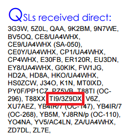

Anyone got current information on the delay of the QSLs (OQRS or other) for TI93Z9DX Cocos Is.?
The QRZ’d page says they have the cards printed but that information is getting a bit old. It has been 4 months.
73,
Bob – W6OPO
_______________________________________________
Chat mailing list
Chat@ncdxc.org
http://mail.ncdxc.org/mailman/listinfo/chat_ncdxc.org
Message delivered to dommer77@gmail.com